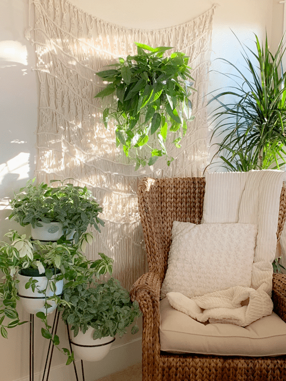
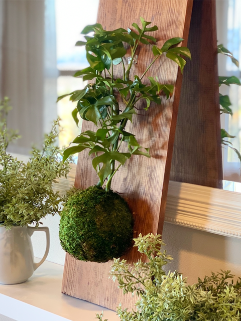
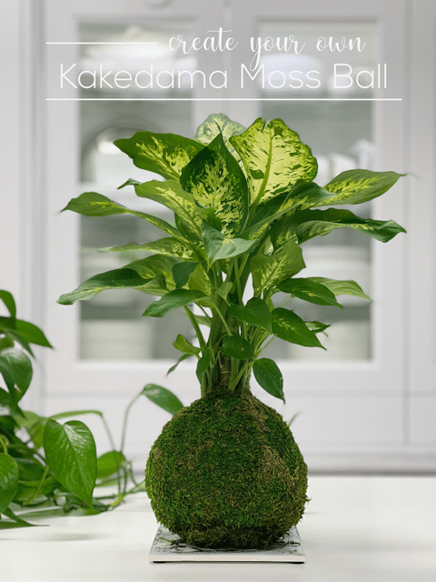
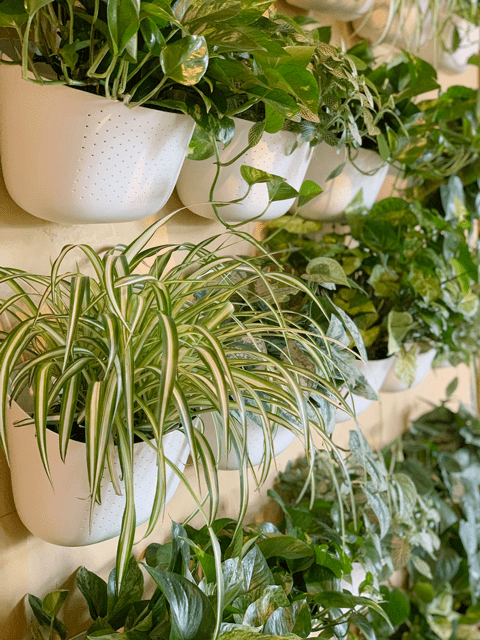

<!doctype html><html lang="en"><meta charset="utf-8"><meta name="viewport" content="width=device-width,initial-scale=1"><title>Decorating with Houseplants Archives</title><link rel="stylesheet" href="../reader.css"><header><a href="../START_HERE.html">← Каталог и поиск</a> · <a href="https://nouveauraw.com/indoor-plants/decorating-with-houseplants/">Оригинал</a> · Личная копия, 10.09.2026 · © Amie Sue</header><main><div id="post-208282" class="post-208282 post type-post status-publish format-standard has-post-thumbnail hentry category-decorating-with-houseplants category-indoor-plants tag-indoor-houseplants tag-plant-decorating-ideas" data-source-url="https://nouveauraw.com/indoor-plants/decorating-with-houseplants/">

  

<div class="grid_1">

	<div class="image-wrap fader">
    <span class="category"><a href="indoor-plants-decorating-with-houseplants-interior-landscaping-plant-styling-25f51b7bee.html"> </a> </span> 
        <!-- removed title overlay -->
	<a href="indoor-plants-decorating-with-houseplants-interior-landscaping-plant-styling-25f51b7bee.html" title="go to Interior Landscaping (plant styling)"><span></span></a>
	</div>
         <!-- title below thumbnail -->
<div class="nr_title"><a href="indoor-plants-decorating-with-houseplants-interior-landscaping-plant-styling-25f51b7bee.html" title="go to Interior Landscaping (plant styling)">Interior Landscaping (plant styling)</a></div>

		
	
</div><!-- .grid -->


  

<div class="grid_1">

	<div class="image-wrap fader">
    <span class="category"><a href="indoor-plants-decorating-with-houseplants-kokedama-moss-ball-plant-board-mounted-7cece569dd.html"> </a> </span> 
        <!-- removed title overlay -->
	<a href="indoor-plants-decorating-with-houseplants-kokedama-moss-ball-plant-board-mounted-7cece569dd.html" title="go to Kokedama Moss Ball Plant | Board Mounted"><span></span></a>
	</div>
         <!-- title below thumbnail -->
<div class="nr_title"><a href="indoor-plants-decorating-with-houseplants-kokedama-moss-ball-plant-board-mounted-7cece569dd.html" title="go to Kokedama Moss Ball Plant | Board Mounted">Kokedama Moss Ball Plant | Board Mounted</a></div>

		
	
</div><!-- .grid -->


  

<div class="grid_1">

	<div class="image-wrap fader last">
    <span class="category"><a href="indoor-plants-varieties-kokedama-moss-ball-plant-e62169d9e7.html"> </a> </span> 
        <!-- removed title overlay -->
	<a href="indoor-plants-varieties-kokedama-moss-ball-plant-e62169d9e7.html" title="go to Kokedama Moss Ball Plant | Table Top Style"><span></span></a>
	</div>
         <!-- title below thumbnail -->
<div class="nr_title"><a href="indoor-plants-varieties-kokedama-moss-ball-plant-e62169d9e7.html" title="go to Kokedama Moss Ball Plant | Table Top Style">Kokedama Moss Ball Plant | Table Top Style</a></div>

		
	
</div><!-- .grid -->


  

<div class="grid_1">

	<div class="image-wrap fader">
    <span class="category"><a href="indoor-plants-decorating-with-houseplants-my-living-indoor-houseplant-wall-484a0c882f.html"> </a> </span> 
        <!-- removed title overlay -->
	<a href="indoor-plants-decorating-with-houseplants-my-living-indoor-houseplant-wall-484a0c882f.html" title="go to My Living Indoor Houseplant Wall"><span></span></a>
	</div>
         <!-- title below thumbnail -->
<div class="nr_title"><a href="indoor-plants-decorating-with-houseplants-my-living-indoor-houseplant-wall-484a0c882f.html" title="go to My Living Indoor Houseplant Wall">My Living Indoor Houseplant Wall</a></div>

		
	
</div><!-- .grid -->


	<div class="nav-interior clearfix">
			<div class="prev"></div>
			<div class="next"></div>
	</div>

	
</div></main></html>